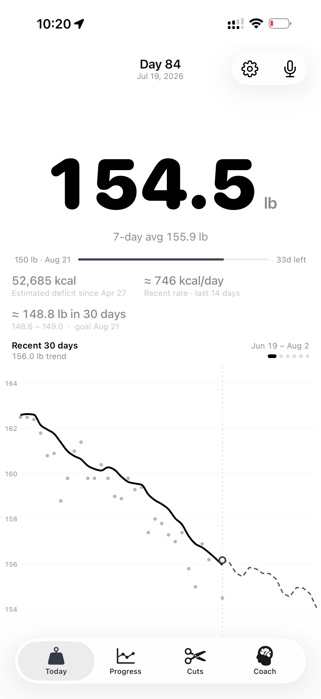

<!DOCTYPE html>
<html lang="en">
<head>
<meta charset="utf-8">
<title>Cut Tracker — Ten First Screens · Pass Two</title>
<style>
:root{
  --font:-apple-system,BlinkMacSystemFont,"SF Pro Text","Helvetica Neue",Helvetica,Arial,sans-serif;
  --mono:ui-monospace,"SF Mono",Menlo,Consolas,monospace;
}
*{box-sizing:border-box;-webkit-print-color-adjust:exact;print-color-adjust:exact}
html,body{margin:0;padding:0}
body{background:#d9d9de;font-family:var(--font)}
@page{size:297mm 210mm;margin:0}
.page{width:297mm;height:210mm;overflow:hidden;position:relative;background:#fff;display:flex;page-break-after:always}
@media screen{.page{margin:28px auto;box-shadow:0 10px 44px rgba(0,0,0,.20)}}
@media print{body{background:#fff}}

/* ---------------- iPhone frame ---------------- */
.phonewrap{position:relative;flex:none}
.phone{position:absolute;top:0;left:0;width:412px;height:866px;transform-origin:top left;
  background:linear-gradient(150deg,#33333a,#0a0a0c 60%);border-radius:64px;padding:11px;
  box-shadow:0 34px 70px rgba(0,0,0,.38),inset 0 0 0 2px #45454c}
.phone .screen{width:390px;height:844px;border-radius:53px;overflow:hidden;position:relative;background:#fff}
.island{position:absolute;top:12px;left:50%;transform:translateX(-50%);width:120px;height:33px;background:#000;border-radius:18px;z-index:70}
.pbtn{position:absolute;background:#17171a;border-radius:2px}
.pbtn-mute{left:-2px;top:118px;width:3px;height:30px}
.pbtn-v1{left:-2px;top:172px;width:3px;height:54px}
.pbtn-v2{left:-2px;top:236px;width:3px;height:54px}
.pbtn-pwr{right:-2px;top:196px;width:3px;height:88px}
.sbar{position:absolute;top:0;left:0;right:0;height:54px;display:flex;justify-content:space-between;align-items:flex-start;
  padding:19px 34px 0 32px;font-weight:600;font-size:15px;z-index:60;letter-spacing:-.2px}
.homeind{position:absolute;bottom:9px;left:50%;transform:translateX(-50%);width:134px;height:5px;border-radius:3px;z-index:60}
.chart{line-height:0}
.chart svg{display:block}

/* ---------------- cover ---------------- */
.cover .cleft{flex:1;padding:15mm 10mm 12mm 18mm;display:flex;flex-direction:column}
.cover .kicker{font-family:var(--mono);font-size:11px;letter-spacing:3px;color:#999;margin-bottom:12px}
.cover h1{font-size:72px;line-height:.96;letter-spacing:-3px;margin:0 0 14px;font-weight:800}
.cover .lede{font-size:15px;line-height:1.5;color:#555;max-width:560px;margin:0 0 14px}
.revnotes{display:flex;gap:22px;margin:0 0 16px;max-width:700px}
.revnotes div{flex:1;border-top:2px solid #111;padding-top:8px}
.revnotes h4{font-family:var(--mono);font-size:10px;letter-spacing:2px;margin:0 0 5px;color:#111}
.revnotes p{font-size:11.5px;line-height:1.5;color:#666;margin:0}
.principles{display:flex;gap:8px;flex-wrap:wrap;margin-bottom:18px}
.principles span{font-family:var(--mono);font-size:10px;letter-spacing:1px;border:1px solid #d7d7d7;border-radius:999px;padding:6px 12px;color:#666}
.clist{display:grid;grid-template-columns:1fr 1fr;gap:7px 30px;max-width:700px}
.clist .ci{display:flex;gap:12px;align-items:baseline;border-top:1px solid #ececec;padding-top:7px}
.clist .cn{font-family:var(--mono);font-size:11px;color:#c00;font-weight:700}
.clist .ct{font-size:13.5px;font-weight:650}
.clist .cs{font-size:12px;color:#999}
.cover .cright{width:100mm;background:#f1f1ee;display:flex;flex-direction:column;align-items:center;justify-content:center;gap:14px}
.figcap{font-family:var(--mono);font-size:10px;letter-spacing:2px;color:#999;text-align:center}
.coverfoot{margin-top:auto;font-family:var(--mono);font-size:10px;letter-spacing:1.5px;color:#bbb;padding-top:14px}

/* ---------------- concept page ---------------- */
.concept .pleft{width:106mm;display:flex;flex-direction:column;align-items:center;justify-content:center;gap:14px;background:#f1f1ee}
.concept .pright{flex:1;padding:14mm 15mm 12mm 13mm;display:flex;flex-direction:column;position:relative}
.cnum{position:absolute;top:13mm;right:15mm;font-family:var(--mono);font-size:12px;color:#bbb;letter-spacing:1px}
.concept h1{font-size:44px;letter-spacing:-1.5px;margin:0;font-weight:800}
.ubar{width:38px;height:4px;border-radius:2px;margin:12px 0 10px}
.concept .tag{font-size:17px;color:#8a8a8a;margin-bottom:6px;font-style:italic}
.concept h3{font-size:10.5px;letter-spacing:2px;color:#a3a3a3;margin:16px 0 6px;font-weight:700}
.concept p{font-size:14px;line-height:1.5;color:#3d3d3d;margin:0}
.concept ul{margin:0;padding-left:17px}
.concept li{font-size:13.5px;line-height:1.42;color:#3d3d3d;margin:4px 0}
.dataline{font-family:var(--mono);font-size:11px;line-height:1.55;background:#f6f6f3;padding:10px 13px;margin-top:16px;color:#555;border-left:3px solid #111}
.palette{display:flex;align-items:center;gap:6px;margin-top:14px}
.palette .sw{width:15px;height:15px;border-radius:8px;border:1px solid rgba(0,0,0,.12)}
.palette .hex{font-family:var(--mono);font-size:9.5px;color:#aaa;margin-right:10px}
.pfoot{position:absolute;bottom:9mm;left:13mm;right:15mm;display:flex;justify-content:space-between;
  font-family:var(--mono);font-size:9.5px;letter-spacing:1.5px;color:#c2c2c2}
</style>
</head>
<body>
<div id="app"></div>

<script>
/* ================= live data from Day 84 (Jul 19, 2026) ================= */
const DOTS =[162.6,162.7,162.5,162.3,161.4,161.8,161.2,161.9,160.8,160.6,160.9,160.3,160.2,160.5,160.1,158.9,159.4,159.1,158.3,158.0,157.9,158.4,157.3,156.9,157.2,156.3,155.4,156.1,155.2,154.5];
const TREND=[162.6,162.6,162.5,162.3,162.0,161.7,161.5,161.3,161.0,160.7,160.4,160.2,160.1,160.0,159.7,159.3,159.0,158.6,158.3,158.1,157.9,157.7,157.4,157.0,156.6,156.2,155.9,155.9,155.9];
const PROJ =[155.6,155.2,155.8,154.9,155.4,154.5,155.0,153.9,154.4,153.2,153.9,152.6,153.1,151.9,151.0,150.2];
const WEEK =[155.9,155.6,155.8,155.2,155.4,155.0,154.5];           // Sun 13 → Sat 19
const WDAYS=['S','M','T','W','T','F','S'];
const START=168.6, GOAL=150, TOTAL_DAYS=117, TODAY_D=84;           // Apr 27 → Aug 21
const ALL84=(function(){const p=[];for(let i=0;i<84;i++){const t=i/83;
  const base=START-(START-154.5)*Math.pow(t,1.12);
  const wob=Math.sin(i*1.7)*0.32+Math.sin(i*0.6+2)*0.22;
  p.push(+(base+wob*(1-t*0.5)).toFixed(1));}p[83]=154.5;return p;})();
const PLAN_TODAY=(START-(START-GOAL)*(TODAY_D-1)/(TOTAL_DAYS-1)).toFixed(1); // 155.3

/* ================= svg helpers ================= */
function xy(data,w,h,min,max,top,bottom){
  top=top||0;bottom=bottom||0;const ih=h-top-bottom;
  return data.map(function(v,i){return [+(i/(data.length-1)*w).toFixed(2),+(top+(max-v)/(max-min)*ih).toFixed(2)];});
}
function smoothPath(p){
  var d='M'+p[0][0]+','+p[0][1];
  for(var i=0;i<p.length-1;i++){
    var p0=p[Math.max(0,i-1)],p1=p[i],p2=p[i+1],p3=p[Math.min(p.length-1,i+2)];
    d+='C'+(p1[0]+(p2[0]-p0[0])/6).toFixed(1)+','+(p1[1]+(p2[1]-p0[1])/6).toFixed(1)+' '
       +(p2[0]-(p3[0]-p1[0])/6).toFixed(1)+','+(p2[1]-(p3[1]-p1[1])/6).toFixed(1)+' '
       +p2[0]+','+p2[1];
  }
  return d;
}
function linePath(p){return 'M'+p.map(function(q){return q[0]+','+q[1]}).join('L')}
function svgHead(w,h){return '<svg width="'+w+'" height="'+h+'" viewBox="0 0 '+w+' '+h+'" xmlns="http://www.w3.org/2000/svg">'}
function flagAt(x,y,label,color,anchor){
  return '<line x1="'+x+'" y1="'+y+'" x2="'+x+'" y2="'+(y-30)+'" stroke="'+color+'" stroke-width="2"/>'
   +'<path d="M'+x+','+(y-30)+' l16,5.5 l-16,5.5 Z" fill="'+color+'"/>'
   +'<text x="'+(x-8)+'" y="'+(y-18)+'" text-anchor="'+(anchor||'end')+'" font-size="11" font-weight="700" fill="'+color+'" font-family="-apple-system,sans-serif">'+label+'</text>';
}
function grain(w,h,id){
  return '<filter id="'+id+'"><feTurbulence type="fractalNoise" baseFrequency="0.9" numOctaves="2" stitchTiles="stitch"/><feColorMatrix type="matrix" values="0 0 0 0 0 0 0 0 0 0 0 0 0 0 0 0 0 0 0.05 0"/></filter>'
   +'<rect width="'+w+'" height="'+h+'" filter="url(#'+id+')"/>';
}

/* ============ scene: misty mountains (Ridgeline) ============ */
function ridge(w,h,base,pts,color){
  var P=pts.map(function(p){return [p[0]*w, base-p[1]*h]});
  return '<path d="'+smoothPath(P)+'L'+w+','+h+'L0,'+h+'Z" fill="'+color+'"/>';
}
function mountainsSVG(w,h){
  var s=svgHead(w,h);
  s+='<defs><linearGradient id="sky" x1="0" y1="0" x2="0" y2="1"><stop offset="0" stop-color="#f2f6ee"/><stop offset=".55" stop-color="#dfe9da"/><stop offset="1" stop-color="#cfe0cb"/></linearGradient>'
   +'<radialGradient id="sun" cx=".5" cy=".5" r=".5"><stop offset="0" stop-color="rgba(255,250,225,.95)"/><stop offset=".5" stop-color="rgba(255,248,220,.35)"/><stop offset="1" stop-color="rgba(255,248,220,0)"/></radialGradient>'
   +'<filter id="blur18" x="-40%" y="-40%" width="180%" height="180%"><feGaussianBlur stdDeviation="14"/></filter></defs>';
  s+='<rect width="'+w+'" height="'+h+'" fill="url(#sky)"/>';
  s+='<circle cx="305" cy="150" r="130" fill="url(#sun)"/>';
  s+=ridge(w,h,470,[[0,.055],[.15,.10],[.3,.065],[.45,.125],[.6,.075],[.75,.115],[.9,.08],[1,.105]],'#cfddcc');
  s+='<ellipse cx="120" cy="470" rx="180" ry="26" fill="rgba(255,255,255,.55)" filter="url(#blur18)"/>';
  s+=ridge(w,h,560,[[0,.095],[.12,.145],[.28,.09],[.42,.16],[.58,.105],[.72,.155],[.88,.10],[1,.14]],'#aec9ab');
  s+='<ellipse cx="300" cy="565" rx="200" ry="30" fill="rgba(255,255,255,.45)" filter="url(#blur18)"/>';
  s+=ridge(w,h,655,[[0,.115],[.14,.185],[.3,.125],[.46,.20],[.62,.135],[.78,.19],[.92,.13],[1,.17]],'#87ad84');
  s+='<ellipse cx="140" cy="660" rx="190" ry="30" fill="rgba(255,255,255,.35)" filter="url(#blur18)"/>';
  s+=ridge(w,h,745,[[0,.145],[.16,.225],[.34,.155],[.5,.24],[.66,.165],[.82,.23],[1,.175]],'#5f8f5f');
  s+=ridge(w,h,844,[[0,.175],[.18,.255],[.36,.19],[.52,.275],[.7,.20],[.86,.26],[1,.215]],'#3f6d46');
  s+=grain(w,h,'gr1');
  return s+'</svg>';
}

/* ============ scene: aurora night (Tide) ============ */
function auroraSVG(w,h){
  var s=svgHead(w,h);
  s+='<defs><linearGradient id="nsky" x1="0" y1="0" x2="0" y2="1"><stop offset="0" stop-color="#04081a"/><stop offset=".5" stop-color="#0a1c38"/><stop offset="1" stop-color="#10304e"/></linearGradient>'
   +'<radialGradient id="moon" cx=".5" cy=".5" r=".5"><stop offset="0" stop-color="rgba(245,242,230,.9)"/><stop offset=".25" stop-color="rgba(245,242,230,.25)"/><stop offset="1" stop-color="rgba(245,242,230,0)"/></radialGradient>'
   +'<filter id="blur30" x="-60%" y="-60%" width="220%" height="220%"><feGaussianBlur stdDeviation="26"/></filter></defs>';
  s+='<rect width="'+w+'" height="'+h+'" fill="url(#nsky)"/>';
  var stars='';for(var i=0;i<52;i++){var sx=(i*173)%w,sy=(i*89)%Math.round(h*0.62),sr=(i%3)*0.5+0.6,so=(0.25+(i%5)*0.13).toFixed(2);
   stars+='<circle cx="'+sx+'" cy="'+sy+'" r="'+sr+'" fill="#fff" opacity="'+so+'"/>';}
  s+=stars;
  s+='<circle cx="318" cy="118" r="90" fill="url(#moon)"/><circle cx="318" cy="118" r="24" fill="#f2efe2"/>';
  s+='<path d="M-40,420 C90,300 180,430 300,330 C380,265 420,300 460,240" stroke="rgba(110,240,190,.30)" stroke-width="90" fill="none" filter="url(#blur30)"/>';
  s+='<path d="M-30,500 C110,420 220,520 330,430 C400,375 430,400 470,350" stroke="rgba(140,160,255,.22)" stroke-width="70" fill="none" filter="url(#blur30)"/>';
  s+='<path d="M-20,340 C120,260 230,350 350,270" stroke="rgba(90,220,200,.20)" stroke-width="55" fill="none" filter="url(#blur30)"/>';
  s+=grain(w,h,'gr2');
  return s+'</svg>';
}

/* ============ chart painters ============ */
/* 01 Slope — zoomed 30d immersion */
function slopeSVG(w,h){
  var min=149.5,max=163.5;
  var P=xy(TREND.concat(PROJ),w,h,min,max),tP=P.slice(0,30),pP=P.slice(29),dP=xy(DOTS,w,h,min,max);
  var s=svgHead(w,h);
  s+='<defs><linearGradient id="sfill" x1="0" y1="0" x2="0" y2="1"><stop offset="0" stop-color="rgba(14,122,79,.16)"/><stop offset="1" stop-color="rgba(14,122,79,0)"/></linearGradient></defs>';
  [150,152,154,156,158,160,162].forEach(function(g){var y=((max-g)/(max-min)*h).toFixed(1);
   s+='<line x1="0" y1="'+y+'" x2="'+w+'" y2="'+y+'" stroke="rgba(0,0,0,.05)" stroke-width="1"/>';
   s+='<text x="10" y="'+(y-6)+'" font-size="10.5" fill="rgba(0,0,0,.28)" font-family="-apple-system,sans-serif">'+g+'</text>';});
  var gy=(max-150)/(max-min)*h;
  s+='<line x1="0" y1="'+gy+'" x2="'+w+'" y2="'+gy+'" stroke="#0e7a4f" stroke-width="1.5" stroke-dasharray="5 5" opacity=".55"/>';
  var tx=tP[29][0];
  s+='<line x1="'+tx+'" y1="0" x2="'+tx+'" y2="'+h+'" stroke="rgba(0,0,0,.14)" stroke-width="1" stroke-dasharray="3 4"/>';
  s+='<path d="'+smoothPath(tP)+'L'+tx+','+h+'L0,'+h+'Z" fill="url(#sfill)" stroke="none"/>';
  s+=dP.map(function(p){return '<circle cx="'+p[0]+'" cy="'+p[1]+'" r="2.4" fill="#d8d8d8"/>'}).join('');
  s+='<path d="'+smoothPath(tP)+'" fill="none" stroke="#111" stroke-width="3.5" stroke-linecap="round" stroke-linejoin="round"/>';
  s+='<path d="'+linePath(pP)+'" fill="none" stroke="#a3a3a3" stroke-width="2" stroke-dasharray="6 6" stroke-linecap="round"/>';
  var e=tP[29];
  s+='<circle cx="'+e[0]+'" cy="'+e[1]+'" r="8" fill="none" stroke="#111" stroke-width="1.5" opacity=".3"/><circle cx="'+e[0]+'" cy="'+e[1]+'" r="4.5" fill="#111"/>';
  var f=pP[pP.length-1];
  s+=flagAt(Math.min(f[0]-4,374),f[1],'150 · AUG 21','#0e7a4f');
  ['JUN 19','JUN 24','JUN 29','JUL 4','JUL 9','JUL 14','TODAY'].forEach(function(d,i){
   var x=i*(w-30)/6+15;s+='<text x="'+x+'" y="'+(h-18)+'" text-anchor="middle" font-size="9.5" letter-spacing="1" fill="rgba(0,0,0,.35)" font-family="-apple-system,sans-serif">'+d+'</text>';});
  return s+'</svg>';
}
/* 02 Ridgeline — scene + chart dissolving into mist */
function ridgelineSVG(w,h){
  var s=mountainsSVG(w,h);
  var min=153.2,max=163.5,top=210,bottom=h-560;
  var P=xy(TREND.concat(PROJ),w,h,min,max,top,bottom),tP=P.slice(0,30),pP=P.slice(29);
  s+='<defs><linearGradient id="rfill" x1="0" y1="0" x2="0" y2="1"><stop offset="0" stop-color="rgba(255,255,255,.34)"/><stop offset="1" stop-color="rgba(255,255,255,0)"/></linearGradient></defs>';
  s+='<path d="'+smoothPath(tP)+'L'+tP[29][0]+','+(top+(h-top-bottom))+ 'L0,'+(top+(h-top-bottom))+'Z" fill="url(#rfill)" stroke="none"/>';
  s+='<path d="'+smoothPath(tP)+'" fill="none" stroke="#16281c" stroke-width="3.5" stroke-linecap="round" stroke-linejoin="round"/>';
  s+='<path d="'+linePath(pP)+'" fill="none" stroke="rgba(22,40,28,.45)" stroke-width="2" stroke-dasharray="6 6" stroke-linecap="round"/>';
  var e=tP[29];
  s+='<circle cx="'+e[0]+'" cy="'+e[1]+'" r="7.5" fill="none" stroke="#16281c" stroke-width="1.5" opacity=".4"/><circle cx="'+e[0]+'" cy="'+e[1]+'" r="4" fill="#16281c"/>';
  var f=pP[pP.length-1];
  s+=flagAt(Math.min(f[0]-2,372),f[1],'150','#16281c');
  var letters=['F','S','S','M','T','W','T','F','S','S','M','T','W','T','GOAL'];
  letters.forEach(function(L,i){var x=8+i*(w-16)/14;
   s+='<text x="'+x+'" y="'+(top+(h-top-bottom)+30)+'" text-anchor="middle" font-size="10" letter-spacing="1" fill="rgba(255,255,255,.85)" font-family="-apple-system,sans-serif">'+L+'</text>';});
  return s+'</svg>';
}
/* 03 This Week II — tall zoomed bars + drift line */
function weekSVG(w,h){
  var min=153.8,max=156.7,bw=w/7,s=svgHead(w,h);
  [154,155,156].forEach(function(g){var y=((max-g)/(max-min)*h).toFixed(1);
   s+='<line x1="0" y1="'+y+'" x2="'+w+'" y2="'+y+'" stroke="rgba(0,0,0,.05)" stroke-width="1"/>';
   s+='<text x="10" y="'+(y-6)+'" font-size="10.5" fill="rgba(0,0,0,.28)" font-family="-apple-system,sans-serif">'+g+'</text>';});
  var tops=[];
  WEEK.forEach(function(v,i){var last=i===6,bh=((v-min)/(max-min))*(h-96),x=+(i*bw+9).toFixed(1),y=+(h-58-bh).toFixed(1);
   tops.push([x+(bw-18)/2,+y]);
   s+='<rect x="'+x+'" y="'+y+'" width="'+(bw-18).toFixed(1)+'" height="'+bh.toFixed(1)+'" rx="10" fill="'+(last?'#1f6bff':'#dfe7f5')+'"/>';
   s+='<text x="'+(x+(bw-18)/2)+'" y="'+(y-10)+'" text-anchor="middle" font-size="12.5" font-weight="600" fill="'+(last?'#1f6bff':'#a7b3c6')+'" font-family="-apple-system,sans-serif">'+v.toFixed(1)+'</text>';
   s+='<text x="'+(x+(bw-18)/2)+'" y="'+(h-30)+'" text-anchor="middle" font-size="12.5" font-weight="'+(last?'700':'600')+'" fill="'+(last?'#111':'#a7b3c6')+'" font-family="-apple-system,sans-serif">'+WDAYS[i]+'</text>';});
  s+='<path d="'+smoothPath(tops)+'" fill="none" stroke="rgba(17,17,17,.55)" stroke-width="2" stroke-dasharray="1 5" stroke-linecap="round"/>';
  return s+'</svg>';
}
/* 04 Steps — staircase */
function stepsSVG(w,h){
  var min=154.0,max=156.6,seg=w/7,s=svgHead(w,h);
  function Y(v){return (max-v)/(max-min)*(h-90)+20}
  s+='<path d="M0,'+Y(WEEK[0])+' '+WEEK.map(function(v,i){return 'L'+(i*seg)+','+Y(v)+' L'+((i+1)*seg)+','+Y(v)}).join(' ').replace('M0,'+Y(WEEK[0])+' L0,'+Y(WEEK[0]),'M0,'+Y(WEEK[0]))+'" fill="none" stroke="none" id="steppath"/>';
  var d='M0,'+Y(WEEK[0]);
  for(var i=1;i<7;i++){d+='L'+(i*seg)+','+Y(WEEK[i-1])+' L'+(i*seg)+','+Y(WEEK[i]);}
  d+='L'+w+','+Y(WEEK[6]);
  s+='<path d="'+d+'L'+w+','+(h-46)+'L0,'+(h-46)+'Z" fill="rgba(17,17,17,.045)" stroke="none"/>';
  s+='<path d="'+d+'" fill="none" stroke="#111" stroke-width="4" stroke-linejoin="round"/>';
  s+='<path d="M'+(6*seg)+','+Y(WEEK[5])+' L'+(6*seg)+','+Y(WEEK[6])+' L'+w+','+Y(WEEK[6])+'" fill="none" stroke="#e8542f" stroke-width="4"/>';
  s+='<circle cx="'+w+'" cy="'+Y(WEEK[6])+'" r="5.5" fill="#e8542f"/>';
  WEEK.forEach(function(v,i){var last=i===6;
   s+='<text x="'+(i*seg+seg/2)+'" y="'+(Y(v)-12)+'" text-anchor="middle" font-size="12" font-weight="600" fill="'+(last?'#e8542f':'#8a8578')+'" font-family="-apple-system,sans-serif">'+v.toFixed(1)+'</text>';
   s+='<text x="'+(i*seg+seg/2)+'" y="'+(h-22)+'" text-anchor="middle" font-size="12.5" font-weight="'+(last?'700':'600')+'" fill="'+(last?'#111':'#a39d8d')+'" font-family="-apple-system,sans-serif">'+WDAYS[i]+'</text>';});
  return s+'</svg>';
}
/* 05 Altitude — full-cut elevation profile */
function altitudeSVG(w,h){
  var min=149,max=169.5;
  var s=svgHead(w,h);
  s+='<defs><linearGradient id="asky" x1="0" y1="0" x2="0" y2="1"><stop offset="0" stop-color="#1d3358"/><stop offset=".55" stop-color="#5d87a8"/><stop offset="1" stop-color="#d9b98c"/></linearGradient>'
   +'<linearGradient id="terr" x1="0" y1="0" x2="0" y2="1"><stop offset="0" stop-color="#33523f"/><stop offset="1" stop-color="#1c2f24"/></linearGradient></defs>';
  s+='<rect width="'+w+'" height="'+h+'" fill="url(#asky)"/>';
  s+='<circle cx="80" cy="'+(h-140)+'" r="70" fill="rgba(255,225,170,.5)"/>';
  var ext=ALL84.concat([154.0,153.2,152.3,151.4,150.6,150.0]); // toward goal
  var P=xy(ext,w,h,min,max),aP=P.slice(0,84),fP=P.slice(83);
  var sea=(max-150)/(max-min)*h;
  s+='<path d="'+smoothPath(aP)+'L'+aP[83][0]+','+h+'L0,'+h+'Z" fill="url(#terr)" stroke="none"/>';
  [10,22,34].forEach(function(o){s+='<path d="'+smoothPath(aP.map(function(p){return [p[0],p[1]+o]}))+'" fill="none" stroke="rgba(255,255,255,.10)" stroke-width="1"/>'});
  s+='<path d="'+smoothPath(aP)+'" fill="none" stroke="rgba(255,255,255,.75)" stroke-width="2.5" stroke-linecap="round"/>';
  s+='<path d="'+linePath(fP)+'" fill="none" stroke="rgba(255,255,255,.55)" stroke-width="2" stroke-dasharray="5 6"/>';
  s+='<line x1="0" y1="'+sea+'" x2="'+w+'" y2="'+sea+'" stroke="rgba(255,217,160,.6)" stroke-width="1" stroke-dasharray="2 5"/>';
  s+='<text x="10" y="'+(sea-7)+'" font-size="9.5" letter-spacing="1.5" fill="rgba(255,217,160,.85)" font-family="-apple-system,sans-serif">SEA LEVEL · 150</text>';
  var e=aP[83];
  s+='<circle cx="'+e[0]+'" cy="'+e[1]+'" r="14" fill="none" stroke="#fff" stroke-width="1.5" opacity=".5"/><circle cx="'+e[0]+'" cy="'+e[1]+'" r="6" fill="#fff"/>';
  var f=fP[fP.length-1];
  s+=flagAt(f[0]-4,f[1],'GOAL','rgba(255,217,160,.95)');
  ['WK 1','WK 4','WK 8','WK 12','AUG 21'].forEach(function(d,i){var x=10+i*(w-20)/4;
   s+='<text x="'+x+'" y="'+(h-16)+'" text-anchor="middle" font-size="9.5" letter-spacing="1" fill="rgba(255,255,255,.55)" font-family="-apple-system,sans-serif">'+d+'</text>';});
  s+=grain(w,h,'gr3');
  return s+'</svg>';
}
/* 06 Pace Line — plan vs actual */
function paceSVG(w,h){
  var min=149,max=169.5,s=svgHead(w,h);
  function X(d){return (d-1)/(TOTAL_DAYS-1)*w}
  function Y(v){return (max-v)/(max-min)*h}
  [150,155,160,165].forEach(function(g){s+='<line x1="0" y1="'+Y(g)+'" x2="'+w+'" y2="'+Y(g)+'" stroke="rgba(0,0,0,.05)" stroke-width="1"/>';
   s+='<text x="'+(w-10)+'" y="'+(Y(g)-6)+'" text-anchor="end" font-size="10.5" fill="rgba(0,0,0,.28)" font-family="-apple-system,sans-serif">'+g+'</text>';});
  var aP=ALL84.map(function(v,i){return [X(i+1),Y(v)]});
  var plan0=[X(1),Y(START)],plan1=[X(TOTAL_DAYS),Y(GOAL)];
  /* ahead-zone: between actual and plan up to today */
  var zone=smoothPath(aP)+'L'+X(TODAY_D)+','+Y(+(START-(START-GOAL)*(TODAY_D-1)/(TOTAL_DAYS-1)).toFixed(2))+'L'+X(1)+','+Y(START)+'Z';
  s+='<path d="'+zone+'" fill="rgba(14,122,79,.10)" stroke="none"/>';
  s+='<line x1="'+plan0[0]+'" y1="'+plan0[1]+'" x2="'+plan1[0]+'" y2="'+plan1[1]+'" stroke="rgba(0,0,0,.25)" stroke-width="2" stroke-dasharray="1 6" stroke-linecap="round"/>';
  s+='<path d="'+smoothPath(aP)+'" fill="none" stroke="#111" stroke-width="3.5" stroke-linecap="round" stroke-linejoin="round"/>';
  var e=aP[83];
  s+='<circle cx="'+e[0]+'" cy="'+e[1]+'" r="7.5" fill="none" stroke="#111" stroke-width="1.5" opacity=".3"/><circle cx="'+e[0]+'" cy="'+e[1]+'" r="4.5" fill="#111"/>';
  s+='<line x1="'+e[0]+'" y1="'+e[1]+'" x2="'+e[0]+'" y2="'+Y(+PLAN_TODAY)+'" stroke="#0e7a4f" stroke-width="2"/>';
  s+='<text x="'+(e[0]-12)+'" y="'+((e[1]+Y(+PLAN_TODAY))/2+4)+'" text-anchor="end" font-size="10.5" font-weight="700" fill="#0e7a4f" font-family="-apple-system,sans-serif">4 DAYS AHEAD</text>';
  s+='<circle cx="'+e[0]+'" cy="'+Y(+PLAN_TODAY)+'" r="3.5" fill="rgba(0,0,0,.35)"/>';
  s+='<text x="'+(e[0]+10)+'" y="'+(Y(+PLAN_TODAY)+4)+'" font-size="10.5" fill="rgba(0,0,0,.45)" font-family="-apple-system,sans-serif">PLAN '+PLAN_TODAY+'</text>';
  s+=flagAt(w-8,Y(GOAL),'150 · AUG 21','#111');
  s+='<text x="'+X(1)+'" y="'+(Y(START)-10)+'" font-size="10.5" fill="rgba(0,0,0,.45)" font-family="-apple-system,sans-serif">168.6 · APR 27</text>';
  return s+'</svg>';
}
/* 07 The Cone — probabilistic fan */
function coneSVG(w,h){
  var min=147.5,max=163.5;
  var s=svgHead(w,h);
  [148,152,156,160].forEach(function(g){var y=((max-g)/(max-min)*h).toFixed(1);
   s+='<line x1="0" y1="'+y+'" x2="'+w+'" y2="'+y+'" stroke="rgba(0,0,0,.05)" stroke-width="1"/>';
   s+='<text x="10" y="'+(y-6)+'" font-size="10.5" fill="rgba(0,0,0,.28)" font-family="-apple-system,sans-serif">'+g+'</text>';});
  var P=xy(TREND,w,h,min,max),tP=P;
  var tx=tP[29][0],ty0=tP[29][1];
  var mid=xy(PROJ,w,h,min,max);
  var up=xy(PROJ.map(function(v,i){return v+0.15+i*0.12}),w,h,min,max);
  var dn=xy(PROJ.map(function(v,i){return v-0.15-i*0.12}),w,h,min,max);
  s+='<defs><linearGradient id="cfill" x1="0" y1="0" x2="1" y2="0"><stop offset="0" stop-color="rgba(31,107,255,.18)"/><stop offset="1" stop-color="rgba(31,107,255,.05)"/></linearGradient></defs>';
  s+='<path d="M'+tx+','+ty0+'L'+up.map(function(p){return p[0]+','+p[1]}).join(' L')+' L'+dn.slice().reverse().map(function(p){return p[0]+','+p[1]}).join(' L')+' Z" fill="url(#cfill)" stroke="none"/>';
  s+='<path d="'+smoothPath(tP)+'" fill="none" stroke="#111" stroke-width="3.5" stroke-linecap="round" stroke-linejoin="round"/>';
  s+='<path d="M'+tx+','+ty0+'L'+mid.map(function(p){return p[0]+','+p[1]}).join(' L')+'" fill="none" stroke="#1f6bff" stroke-width="2" stroke-dasharray="6 6"/>';
  var e=tP[29];
  s+='<circle cx="'+e[0]+'" cy="'+e[1]+'" r="7.5" fill="none" stroke="#111" stroke-width="1.5" opacity=".3"/><circle cx="'+e[0]+'" cy="'+e[1]+'" r="4.5" fill="#111"/>';
  var gy=(max-150)/(max-min)*h;
  s+='<line x1="0" y1="'+gy+'" x2="'+w+'" y2="'+gy+'" stroke="#1f6bff" stroke-width="1" stroke-dasharray="2 5" opacity=".5"/>';
  s+='<text x="'+(w-10)+'" y="'+(gy-8)+'" text-anchor="end" font-size="10" font-weight="700" letter-spacing="1" fill="#1f6bff" font-family="-apple-system,sans-serif">GOAL 150 · AUG 21</text>';
  var lm=mid[mid.length-1];
  s+='<text x="'+(lm[0]-6)+'" y="'+(lm[1]+26)+'" text-anchor="end" font-size="10.5" font-weight="600" fill="#1f6bff" font-family="-apple-system,sans-serif">LANDS 148.6–149.0 · ~AUG 18</text>';
  return s+'</svg>';
}
/* 08 One Number, One Curve — bare tall curve */
function curveSVG(w,h){
  var min=152.5,max=163.5;
  var P=xy(TREND,w,h,min,max);
  var s=svgHead(w,h);
  s+='<defs><linearGradient id="cvfill" x1="0" y1="0" x2="0" y2="1"><stop offset="0" stop-color="rgba(0,0,0,.07)"/><stop offset="1" stop-color="rgba(0,0,0,0)"/></linearGradient></defs>';
  s+='<path d="'+smoothPath(P)+'L'+w+','+h+'L0,'+h+'Z" fill="url(#cvfill)" stroke="none"/>';
  s+='<path d="'+smoothPath(P)+'" fill="none" stroke="#111" stroke-width="3.5" stroke-linecap="round" stroke-linejoin="round"/>';
  var e=P[29];
  s+='<circle cx="'+e[0]+'" cy="'+e[1]+'" r="9" fill="none" stroke="#d9432f" stroke-width="1.5" opacity=".5"/><circle cx="'+e[0]+'" cy="'+e[1]+'" r="5" fill="#d9432f"/>';
  return s+'</svg>';
}
/* 09 Tide — aurora + glowing curve */
function tideSVG(w,h){
  var s=auroraSVG(w,h);
  var min=153,max=163.5,top=300,bottom=h-640;
  var P=xy(TREND.concat(PROJ),w,h,min,max,top,bottom),tP=P.slice(0,30),pP=P.slice(29);
  s+='<defs><filter id="glow" x="-30%" y="-30%" width="160%" height="160%"><feGaussianBlur stdDeviation="4" result="b"/><feMerge><feMergeNode in="b"/><feMergeNode in="SourceGraphic"/></feMerge></filter>'
   +'<linearGradient id="tfill" x1="0" y1="0" x2="0" y2="1"><stop offset="0" stop-color="rgba(255,255,255,.16)"/><stop offset="1" stop-color="rgba(255,255,255,0)"/></linearGradient></defs>';
  s+='<path d="'+smoothPath(tP)+'L'+tP[29][0]+','+(top+(h-top-bottom))+'L0,'+(top+(h-top-bottom))+'Z" fill="url(#tfill)" stroke="none"/>';
  s+='<path d="'+smoothPath(tP)+'" fill="none" stroke="#fff" stroke-width="3" stroke-linecap="round" stroke-linejoin="round" filter="url(#glow)"/>';
  s+='<path d="'+linePath(pP)+'" fill="none" stroke="rgba(255,255,255,.5)" stroke-width="2" stroke-dasharray="6 6"/>';
  var e=tP[29];
  s+='<circle cx="'+e[0]+'" cy="'+e[1]+'" r="8" fill="none" stroke="#fff" stroke-width="1.5" opacity=".5"/><circle cx="'+e[0]+'" cy="'+e[1]+'" r="4.5" fill="#fff"/>';
  var f=pP[pP.length-1];
  s+=flagAt(Math.min(f[0]-2,372),f[1],'150','rgba(255,255,255,.9)');
  var letters=['F','S','S','M','T','W','T','F','S','S','M','T','W','T','GOAL'];
  letters.forEach(function(L,i){var x=8+i*(w-16)/14;
   s+='<text x="'+x+'" y="'+(top+(h-top-bottom)+30)+'" text-anchor="middle" font-size="10" letter-spacing="1" fill="rgba(255,255,255,.5)" font-family="-apple-system,sans-serif">'+L+'</text>';});
  return s+'</svg>';
}
/* 10 Continuous Zoom — week-level zoom state */
function zoomSVG(w,h){
  var min=154.0,max=156.6;
  var P=xy(WEEK,w,h,min,max,26,64);
  var s=svgHead(w,h);
  s+='<defs><linearGradient id="zfill" x1="0" y1="0" x2="0" y2="1"><stop offset="0" stop-color="rgba(14,122,138,.16)"/><stop offset="1" stop-color="rgba(14,122,138,0)"/></linearGradient></defs>';
  [154.5,155,155.5,156].forEach(function(g){var y=((max-g)/(max-min)*(h-90)+26).toFixed(1);
   s+='<line x1="0" y1="'+y+'" x2="'+w+'" y2="'+y+'" stroke="rgba(0,0,0,.05)" stroke-width="1"/>';
   s+='<text x="10" y="'+(y-6)+'" font-size="10.5" fill="rgba(0,0,0,.30)" font-family="-apple-system,sans-serif">'+g+'</text>';});
  WEEK.forEach(function(v,i){var p=P[i];
   s+='<circle cx="'+p[0]+'" cy="'+p[1]+'" r="3" fill="#c3d5d8"/>';
   s+='<text x="'+p[0]+'" y="'+(h-34)+'" text-anchor="middle" font-size="12.5" font-weight="'+(i===6?'700':'600')+'" fill="'+(i===6?'#111':'#9ab0b4')+'" font-family="-apple-system,sans-serif">'+WDAYS[i]+'</text>';});
  s+='<path d="'+smoothPath(P)+'L'+w+','+(h-64)+'L0,'+(h-64)+'Z" fill="url(#zfill)" stroke="none"/>';
  s+='<path d="'+smoothPath(P)+'" fill="none" stroke="#0e7a8a" stroke-width="4" stroke-linecap="round" stroke-linejoin="round"/>';
  var e=P[6];
  s+='<circle cx="'+e[0]+'" cy="'+e[1]+'" r="8" fill="none" stroke="#0e7a8a" stroke-width="1.5" opacity=".4"/><circle cx="'+e[0]+'" cy="'+e[1]+'" r="5" fill="#0e7a8a"/>';
  s+='<text x="'+(e[0]-2)+'" y="'+(e[1]-16)+'" text-anchor="end" font-size="13" font-weight="700" fill="#0e7a8a" font-family="-apple-system,sans-serif">154.5</text>';
  return s+'</svg>';
}

/* ================= chrome bits ================= */
function sbar(light){
  var c=light?'#fff':'#111';
  return '<div class="sbar" style="color:'+c+'"><span>10:20</span>'
   +'<span style="display:flex;align-items:center;gap:6px">'
   +'<svg width="17" height="11" viewBox="0 0 17 11" fill="'+c+'"><rect x="0" y="7" width="3" height="4" rx="1"/><rect x="4.5" y="5" width="3" height="6" rx="1"/><rect x="9" y="2.5" width="3" height="8.5" rx="1"/><rect x="13.5" y="0" width="3" height="11" rx="1"/></svg>'
   +'<svg width="16" height="12" viewBox="0 0 16 12" fill="none" stroke="'+c+'" stroke-width="1.6" stroke-linecap="round"><path d="M1.5 4.6a9.5 9.5 0 0 1 13 0"/><path d="M4.2 7.4a5.6 5.6 0 0 1 7.6 0"/><circle cx="8" cy="10.2" r="1.3" fill="'+c+'" stroke="none"/></svg>'
   +'<svg width="25" height="12" viewBox="0 0 25 12"><rect x="0.5" y="0.5" width="21" height="11" rx="3.5" fill="none" stroke="'+c+'" opacity=".45"/><rect x="2" y="2" width="15" height="8" rx="2" fill="'+c+'"/><path d="M23.2 4v4a2.1 2.1 0 0 0 0-4z" fill="'+c+'" opacity=".45"/></svg>'
   +'</span></div>';
}
function homeind(light){return '<div class="homeind" style="background:'+(light?'rgba(255,255,255,.85)':'rgba(0,0,0,.32)')+'"></div>'}

/* ================= the ten concepts — pass two ================= */
const CONCEPTS=[
{id:'slope',num:'01',name:'Slope',tag:'The immersion, sharpened',bg:'#fbfbf9',
 idea:'The full-bleed chart from pass one, rebuilt so the data can’t hide: the y-axis is zoomed to the 30-day range, the curve owns three quarters of the screen, and gridlines every 2 lb make a 0.3 lb morning visible from across the room.',
 why:['Marginal variation is the point — at this zoom, daily noise has texture and the trend is undeniable.','No chrome at all: weight, dates and the goal flag live inside the chart’s own margins.','The projection ends in a planted flag at 150, not a fading dashed line.'],
 ix:['Hold + drag scrubs any day; the hero number swaps to that day’s value.','Pinch zooms the y-axis around today’s weight.','Swipe switches 7D / 30D / 90D windows — axis re-fits every time.'],
 data:'SHOWN — weight, avg, week delta, zoomed curve, projection, goal flag. HIDDEN — kcal math, totals.',
 palette:['#fbfbf9','#111111','#0e7a4f'],
 screen:
  '<div class="chart" data-p="slope" style="position:absolute;inset:0"></div>'
  +'<div style="position:absolute;top:0;left:0;right:0;height:190px;background:linear-gradient(180deg,rgba(251,251,249,.97),rgba(251,251,249,0))"></div>'
  +sbar(false)
  +'<div style="position:absolute;top:72px;left:24px">'
  +'<div style="font-size:60px;font-weight:800;letter-spacing:-2.5px;color:#111;line-height:1">154.5<span style="font-size:22px;font-weight:600;color:#999;letter-spacing:0"> lb</span></div>'
  +'<div style="font-size:13.5px;color:#8a8a8a;margin-top:6px">7-day avg 155.9 · −1.4 this week</div></div>'
  +'<div style="position:absolute;top:80px;right:24px;text-align:right;font-size:11px;letter-spacing:1.4px;color:#b0b0b0;font-weight:600">DAY 84<br>JUL 19</div>'
  +homeind(false)},

{id:'ridge',num:'02',name:'Ridgeline',tag:'The chart lives in a landscape',bg:'#e8efe6',
 idea:'A full-bleed valley scene — mist, descending ridges — with your curve drawn across the sky where the fog is clearing. The area under the line dissolves into the valley below; the goal is a flag planted on the far ridge.',
 why:['Background imagery gives the screen a mood without costing a pixel of data.','The landscape descends as you do — the scene itself is the progress bar.','Most screenshot-able version on the table, and 154.5 still reads first.'],
 ix:['Tap the scene to strip it back to the plain chart (focus mode).','Drag across the ridge to scrub any day.','The palette follows your actual weigh-in hour — dawn, noon, dusk.'],
 data:'SHOWN — weight, week delta, curve, day letters, goal flag. HIDDEN — everything else.',
 palette:['#e8efe6','#16281c','#4a7a52'],
 screen:
  '<div class="chart" data-p="ridge" style="position:absolute;inset:0"></div>'
  +sbar(false)
  +'<div style="position:absolute;top:76px;left:0;right:0;text-align:center">'
  +'<div style="font-size:56px;font-weight:800;letter-spacing:-2px;color:#16281c;line-height:1">154.5<span style="font-size:20px;font-weight:600;color:rgba(22,40,28,.5)"> lb</span></div>'
  +'<div style="font-size:13.5px;color:rgba(22,40,28,.6);margin-top:5px">−1.4 lb this week · avg 155.9</div></div>'
  +homeind(false)},

{id:'week',num:'03',name:'This Week II',tag:'Seven days, full volume',bg:'#ffffff',
 idea:'Pass one’s week view with the volume turned up: the axis is zoomed to the week’s 2.9 lb span so each morning is a visible event, bars carry a dotted drift line, and the only hero is the week’s delta stated as data.',
 why:['At this zoom, +0.2 and −0.4 are legible — marginal variation is center stage.','Nothing about August exists here; long-term pressure lives one gesture away.','The drift line over the bars quietly teaches: steps down, noise up.'],
 ix:['Swipe right to rewind week by week — the hero recomputes per week.','Pull down and the chart stretches into the 30-day view.','Tap a bar for that day’s note and weigh-in time.'],
 data:'SHOWN — 7 days, week delta, today’s weight. HIDDEN — goal, pace, totals.',
 palette:['#ffffff','#1f6bff','#dfe7f5'],
 screen:
  sbar(false)
  +'<div style="position:absolute;top:88px;left:0;right:0;text-align:center;font-size:11px;letter-spacing:1.8px;color:#a0a0a0;font-weight:600">JUL 13 – JUL 19 · DAY 84</div>'
  +'<div style="position:absolute;top:122px;left:0;right:0;text-align:center">'
  +'<div style="font-size:96px;font-weight:800;color:#1f6bff;letter-spacing:-4px;line-height:1">−1.4</div>'
  +'<div style="font-size:16px;color:#8a8a8a;margin-top:6px">lb this week · 154.5 this morning</div></div>'
  +'<div class="chart" data-p="week" style="position:absolute;left:0;right:0;bottom:24px;height:470px"></div>'
  +homeind(false)},

{id:'steps',num:'04',name:'Steps',tag:'The staircase',bg:'#f4f2ec',
 idea:'Same week, different honesty: a step chart, because you weigh in once a day — the data really is seven flat readings, not a curve. Drawn as a tall descending staircase on warm paper, today’s step in signal orange.',
 why:['Step charts are the truthful geometry for sampled data — no fake interpolation between mornings.','The staircase metaphor is instant: down is winning, and you can count the steps.','Architecturally bold — geometric and playful, nothing like a finance app.'],
 ix:['Same gestures as This Week II — swipe for history, pull to grow.','Tap a tread for that day’s detail.','Risers tint on up-days, so a rough week reads at a glance.'],
 data:'SHOWN — 7 daily readings as steps, week delta. HIDDEN — everything long-term.',
 palette:['#f4f2ec','#111111','#e8542f'],
 screen:
  sbar(false)
  +'<div style="position:absolute;top:92px;left:28px">'
  +'<div style="font-size:64px;font-weight:800;letter-spacing:-2.5px;color:#111;line-height:1">154.5</div>'
  +'<div style="font-size:14px;color:#8a8578;margin-top:6px">−1.4 lb since Sunday · week 12 of 17</div></div>'
  +'<div class="chart" data-p="steps" style="position:absolute;left:0;right:0;bottom:60px;height:480px"></div>'
  +homeind(false)},

{id:'alt',num:'05',name:'Altitude',tag:'The descent, mapped',bg:'#20365c',
 idea:'The whole cut as a topographic elevation profile: you started at 168.6 and you’re descending toward sea level at 150. Your marker sits on the slope at 154.5 — the largest label on screen — with the remaining route dashed to the flag.',
 why:['Fixes the journey problem outright: where you are IS the hero, pinned to the terrain.','“4.5 lb to go” feels like a walk, not a debt.','Contour lines and a dawn horizon make it a poster, not a dashboard.'],
 ix:['Drag along the route to revisit any day’s elevation.','Tap the flag to re-plan — the terrain re-slopes around the new goal.','The sky warms as you approach sea level.'],
 data:'SHOWN — full profile, current weight, lb descended / to go, goal flag. HIDDEN — kcal, projections.',
 palette:['#20365c','#2e4a3a','#f2c99b'],
 screen:
  '<div class="chart" data-p="alt" style="position:absolute;inset:0"></div>'
  +sbar(true)
  +'<div style="position:absolute;top:80px;left:0;right:0;text-align:center">'
  +'<div style="font-size:60px;font-weight:800;letter-spacing:-2px;color:#fff;line-height:1">154.5</div>'
  +'<div style="font-size:13.5px;color:rgba(255,255,255,.75);margin-top:6px">−14.1 descended · 4.5 to sea level</div></div>'
  +homeind(true)},

{id:'pace',num:'06',name:'Pace Line',tag:'Progress as geometry',bg:'#ffffff',
 idea:'No adjectives, just two lines: the plan (168.6 → 150 by Aug 21) and what you actually did. The gap between them is tinted — right now it’s a four-day-ahead gap — and today’s readout compares plan vs actual: 155.3 called, 154.5 weighed.',
 why:['“Ahead” becomes something you see, not something the app tells you — zero value judgment.','The plan line is a commitment device rendered as a ruler.','Works at any zoom; the tinted gap grows and shrinks with you.'],
 ix:['Drag the plan line’s endpoint to re-commit — date and target re-solve.','Tap the gap to toggle “days ahead” ↔ “lb ahead”.','Pinch to zoom into the near-term segment.'],
 data:'SHOWN — plan line, actual curve, gap, plan-vs-actual today. HIDDEN — everything else.',
 palette:['#ffffff','#111111','#0e7a4f'],
 screen:
  '<div class="chart" data-p="pace" style="position:absolute;inset:0"></div>'
  +'<div style="position:absolute;top:0;left:0;right:0;height:180px;background:linear-gradient(180deg,rgba(255,255,255,.96),rgba(255,255,255,0))"></div>'
  +sbar(false)
  +'<div style="position:absolute;top:74px;left:24px">'
  +'<div style="font-size:56px;font-weight:800;letter-spacing:-2.5px;color:#111;line-height:1">154.5<span style="font-size:20px;font-weight:600;color:#999"> lb</span></div>'
  +'<div style="font-size:13.5px;color:#8a8a8a;margin-top:6px">plan called for 155.3 today</div></div>'
  +homeind(false)},

{id:'cone',num:'07',name:'The Cone',tag:'An honest future',bg:'#ffffff',
 idea:'The dashed projection lies — it pretends to know the path. This replaces it with a probability cone that widens into the future: center landing 148.8, likely band 148.6–149.0, arriving around Aug 18. The past is solid; the future is a fan.',
 why:['Uncertainty rendered honestly is calming — plateaus stop feeling like broken promises.','The fan is a distinctive, beautiful shape no competitor has.','Still lands on the goal flag, so the story stays intact.'],
 ix:['Drag the cone’s edge wider or narrower to stress-test your assumed rate.','Tap the band for the underlying 14-day rate math.','Watch the cone re-shape each morning with one new point.'],
 data:'SHOWN — history, cone, landing band, goal line. HIDDEN — raw kcal estimates.',
 palette:['#ffffff','#1f6bff','#c9d9fb'],
 screen:
  '<div class="chart" data-p="cone" style="position:absolute;inset:0"></div>'
  +'<div style="position:absolute;top:0;left:0;right:0;height:180px;background:linear-gradient(180deg,rgba(255,255,255,.96),rgba(255,255,255,0))"></div>'
  +sbar(false)
  +'<div style="position:absolute;top:74px;left:24px">'
  +'<div style="font-size:56px;font-weight:800;letter-spacing:-2.5px;color:#111;line-height:1">154.5<span style="font-size:20px;font-weight:600;color:#999"> lb</span></div>'
  +'<div style="font-size:13.5px;color:#8a8a8a;margin-top:6px">30 days of history · 30 days of maybe</div></div>'
  +homeind(false)},

{id:'one',num:'08',name:'One Number, One Curve',tag:'Minimal — but the data leads',bg:'#ffffff',
 idea:'The minimal option done without verdicts: one giant number, one tall zoomed curve filling the rest of the screen, and a single context line under the number that cycles on tap. That is the entire interface.',
 why:['Progressive disclosure without ever hiding the curve — context rotates, the trend is permanent.','No judgment words anywhere; the curve speaks for itself.','One tap replaces one dashboard — the fastest possible read.'],
 ix:['Tap the context line to cycle: AVG → WEEK → PROJ → DAYS LEFT.','Long-press the curve to scrub any day.','Double-tap swaps lb ↔ kg.'],
 data:'SHOWN — weight, one rotating context stat, tall curve. HIDDEN — everything, one tap at a time.',
 palette:['#ffffff','#111111','#d9432f'],
 screen:
  '<div class="chart" data-p="curve" style="position:absolute;inset:0"></div>'
  +'<div style="position:absolute;top:0;left:0;right:0;height:200px;background:linear-gradient(180deg,rgba(255,255,255,.97),rgba(255,255,255,0))"></div>'
  +sbar(false)
  +'<div style="position:absolute;top:76px;left:0;right:0;text-align:center">'
  +'<div style="font-size:68px;font-weight:800;letter-spacing:-3px;color:#111;line-height:1">154.5</div>'
  +'<div style="font-size:12px;letter-spacing:1.6px;color:#d9432f;font-weight:700;margin-top:10px">7-DAY AVG 155.9 · TAP TO CYCLE</div></div>'
  +homeind(false)},

{id:'tide',num:'09',name:'Tide',tag:'The night shift',bg:'#060b1a',
 idea:'The dark-room version: a deep aurora sky, a glassy white curve glowing over it, day letters like constellations. Same data, same zoom — but the screen feels like weather at 11pm.',
 why:['Weigh-ins and check-ins happen in low light; this is native to that moment.','The aurora’s intensity drifts with your streak — ambient, never loud.','Proof the data-first layout survives a completely different skin.'],
 ix:['Tap anywhere to lift the aurora into plain dark mode.','Drag the curve to scrub any day.','The sky can follow local weather if you let it.'],
 data:'SHOWN — weight, week delta, glowing curve, day letters. HIDDEN — the rest.',
 palette:['#060b1a','#7ee0c2','#b18cff'],
 screen:
  '<div class="chart" data-p="tide" style="position:absolute;inset:0"></div>'
  +sbar(true)
  +'<div style="position:absolute;top:80px;left:0;right:0;text-align:center">'
  +'<div style="font-size:56px;font-weight:800;letter-spacing:-2px;color:#fff;line-height:1">154.5<span style="font-size:20px;font-weight:600;color:rgba(255,255,255,.5)"> lb</span></div>'
  +'<div style="font-size:13.5px;color:rgba(255,255,255,.65);margin-top:5px">−1.4 lb this week · avg 155.9</div></div>'
  +homeind(true)},

{id:'zoom',num:'10',name:'Continuous Zoom',tag:'One chart, every horizon',bg:'#f7fbfa',
 idea:'This Week and Chart Immersion are the same idea at different scales — so make the scale fluid. Pinch the curve and it flows from 7 days to 30 to the whole cut, re-fitting the y-axis live so variation always fills the screen. A small slider shows where in time you are.',
 why:['Kills the window-picker (7D / 30D / ALL) — time becomes a physical dimension.','At every zoom level the axis re-fits, so marginal variation is always center stage.','The most direct answer to “show less, then let me go deeper”.'],
 ix:['Pinch to travel through time scales; the slider follows your fingers.','Double-tap snaps to the three canonical stops: week, month, cut.','Flick the slider to jump straight to goal day.'],
 data:'SHOWN — curve at current zoom, weight, scale slider. HIDDEN — everything until pinched into view.',
 palette:['#f7fbfa','#0e7a8a','#111111'],
 screen:
  sbar(false)
  +'<div style="position:absolute;top:88px;left:0;right:0;text-align:center">'
  +'<div style="font-size:60px;font-weight:800;letter-spacing:-2.5px;color:#111;line-height:1">154.5<span style="font-size:20px;font-weight:600;color:#999"> lb</span></div>'
  +'<div style="font-size:13.5px;color:#8a8a8a;margin-top:6px">week view · −1.4 lb</div></div>'
  +'<div class="chart" data-p="zoom" style="position:absolute;left:0;right:0;bottom:120px;height:470px"></div>'
  +'<div style="position:absolute;bottom:64px;left:40px;right:40px">'
  +'<div style="display:flex;justify-content:space-between;font-size:9.5px;letter-spacing:1.6px;color:#9ab0b4;font-weight:600;margin-bottom:8px"><span>WEEK</span><span>MONTH</span><span>CUT</span></div>'
  +'<div style="position:relative;height:3px;border-radius:2px;background:#dce8ea"><div style="position:absolute;left:8%;top:-4.5px;width:12px;height:12px;border-radius:6px;background:#0e7a8a"></div></div></div>'
  +'<div style="position:absolute;bottom:34px;left:0;right:0;text-align:center;font-size:9.5px;letter-spacing:1.6px;color:#b8c8cb;font-weight:600">PINCH TO TRAVEL THROUGH TIME</div>'
  +homeind(false)}
];

/* ================= painter registry ================= */
const PAINTERS={
 slope:function(el){el.innerHTML=slopeSVG(390,844)},
 ridge:function(el){el.innerHTML=ridgelineSVG(390,844)},
 week:function(el){el.innerHTML=weekSVG(390,470)},
 steps:function(el){el.innerHTML=stepsSVG(390,480)},
 alt:function(el){el.innerHTML=altitudeSVG(390,844)},
 pace:function(el){el.innerHTML=paceSVG(390,844)},
 cone:function(el){el.innerHTML=coneSVG(390,844)},
 curve:function(el){el.innerHTML=curveSVG(390,844)},
 tide:function(el){el.innerHTML=tideSVG(390,844)},
 zoom:function(el){el.innerHTML=zoomSVG(390,470)}
};

/* ================= assembly ================= */
function phone(inner,extraStyle){
  return '<div class="phonewrap" style="width:'+Math.round(412*0.64)+'px;height:'+Math.round(866*0.64)+'px">'
   +'<div class="phone" style="transform:scale(0.64)"><div class="screen" style="'+(extraStyle||'')+'">'+inner
   +'<div class="island"></div></div>'
   +'<div class="pbtn pbtn-mute"></div><div class="pbtn pbtn-v1"></div><div class="pbtn pbtn-v2"></div><div class="pbtn pbtn-pwr"></div>'
   +'</div></div>';
}
function pageHTML(c){
  var acc=c.palette[1];
  return '<section class="page concept">'
   +'<div class="pleft"><div class="figcap">FIG. '+c.num+'</div>'+phone(c.screen,'background:'+(c.bg||'#fff'))+'<div class="figcap">'+c.name.toUpperCase()+'</div></div>'
   +'<div class="pright"><div class="cnum">'+c.num+' / 10</div>'
   +'<h1>'+c.name+'</h1><div class="ubar" style="background:'+acc+'"></div>'
   +'<div class="tag">'+c.tag+'</div>'
   +'<h3>THE IDEA</h3><p>'+c.idea+'</p>'
   +'<h3>WHY IT’S INTERESTING</h3><ul>'+c.why.map(function(w){return '<li>'+w+'</li>'}).join('')+'</ul>'
   +'<h3>PROGRESSIVE DISCLOSURE &amp; INTERACTIONS</h3><ul>'+c.ix.map(function(w){return '<li>'+w+'</li>'}).join('')+'</ul>'
   +'<div class="dataline" style="border-color:'+acc+'">'+c.data+'</div>'
   +'<div class="palette">'+c.palette.map(function(p){return '<span class="sw" style="background:'+p+'"></span><span class="hex">'+p+'</span>'}).join('')+'</div>'
   +'<div class="pfoot"><span>CUT TRACKER — FIRST-SCREEN DOSSIER · PASS TWO</span><span>JUL 19, 2026 · DAY 84 DATA</span></div>'
   +'</div></section>';
}
const BASELINE=phone('','background:#000');
const COVER='<section class="page cover"><div class="cleft">'
 +'<div class="kicker">CUT TRACKER · DESIGN DOSSIER · PASS TWO · JUL 19, 2026</div>'
 +'<h1>Ten First<br>Screens</h1>'
 +'<p class="lede">A full second pass after review. Same question — what greets you on Day 84? — same live numbers (154.5 lb, 33 days to goal, −1.4 this week), completely new proposals tuned to the critique.</p>'
 +'<div class="revnotes">'
 +'<div><h4>KILLED</h4><p>Verdict-first (“On track.”) · serif editorial · calorie-budget hero · coach-first screen · brutalist mono · short low charts</p></div>'
 +'<div><h4>AMPLIFIED</h4><p>Tall charts zoomed so marginal variation is center stage · week views ×3 · background imagery behind data · goal geometry · honest uncertainty</p></div>'
 +'<div><h4>CONSTANTS</h4><p>154.5 leads everywhere — no judgment words · full-bleed, no cards · coach stays silent unless needed</p></div>'
 +'</div>'
 +'<div class="clist">'+CONCEPTS.map(function(c){return '<div class="ci"><span class="cn">'+c.num+'</span><span><span class="ct">'+c.name+'</span> <span class="cs">— '+c.tag+'</span></span></div>'}).join('')+'</div>'
 +'<div class="coverfoot">BASELINE SCREEN SHOWN AT RIGHT FOR REFERENCE · ALL MOCKUPS AT 390×844</div>'
 +'</div><div class="cright"><div class="figcap">FIG. 00</div>'+BASELINE+'<div class="figcap">THE BASELINE — WHAT SHIPS TODAY</div></div></section>';

document.getElementById('app').innerHTML=COVER+CONCEPTS.map(pageHTML).join('');
document.querySelectorAll('[data-p]').forEach(function(el){PAINTERS[el.dataset.p](el)});
</script>
</body>
</html>
